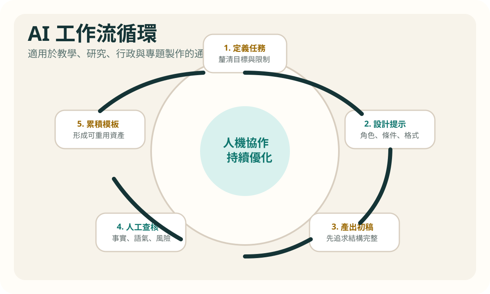

Project 1
AI-assisted instructional design
Choose a course and design how AI can support planning, activities, assignments, and feedback.
- Output: lesson plan, activity flow, prompt set
- For: teachers, TAs, teacher education students
Project 2
AI-supported research workflow
Use your own research topic to build a workflow for literature review, synthesis, and writing support.
- Output: workflow, reading pack, usage statement
- For: graduate students, faculty, research assistants
Project 3
AI for administrative automation
Identify a repeated workplace process and redesign it with forms, spreadsheets, documents, and AI support.
- Output: process diagram, field design, role notes
- For: staff, project teams, cross-functional groups
Project 4
Interactive AI service prototype
Plan a chatbot, service assistant, or agent-like system with clear user needs and response boundaries.
- Output: dialogue flow, functional spec, risk checklist
- For: developers, designers, educational service teams
Project design reminders
- Choose a problem you would actually continue using after the course.
- Do not submit only AI output. Explain the task framing, tool choice, and human decisions.
- Keep the public version at the method level, and reserve richer case material for premium extensions.